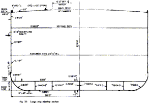
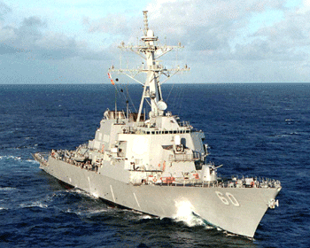
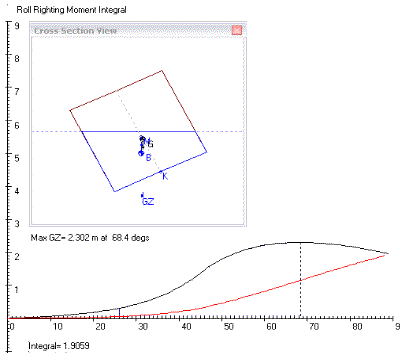
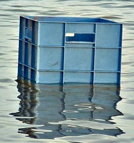
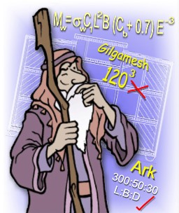

Despite remarkable similarities with the Biblical flood story, the Epic of Gilgamesh runs a distant second place in the huge list of flood legends from around the world. The Genesis account appears to give an accurate description of a genuine vessel.
(Click to enlarge)
The Epic of Gilgamesh and the Biblical account of Noah's flood have a lot of similarities. This is no surprise since they are both retelling the same event of history - a worldwide flood. But like thousands of flood legends around the world, the Gilgamesh story seems to have suffered from poor record keeping. See if you can tell what's wrong.
Let's look at each vessel. Here they are - drawn to scale using the same cubit length of 0.5m. (See Noah's Cubit)
|
(Epic of Gilgamesh) 120L x120B x 120D cubits, around 90 000 tonnes assuming density of 0.4
|
|
|
Noah's Ark. (Bible) 300L x 50B x 30D cubits, around 22 000 tonnes assuming density of 0.4 |
Does Utnapishtim’s Ark look much like a ship to you? (Click to enlarge)
There's a good chance the Gilgamesh storyteller got his icons confused - rumor has it that a certain tower in Babylon was
built on a square base. Yet some modern scholars want you to think the Noah story grew out of Babylonian mess-ups like this.
The breadth to depth ratio is famous of course. Everyone knows 1.67 B/D works very well and is quite normal for a cargo ship. This is an important factor for roll stability but also has a bearing on the seakeeping. Increasing the width will provide even more stability, but at a cost - roll accelerations can increase to uncomfortable and even dangerous levels.
|
Typical Cargo Ship (Principals of Naval Architecture - SNAME) Cross-section amidships for a 19,000 tonne cargo vessel. 528.5 x 76 x 44.5 feet. (161 x 23 x 13.6 m). The B/D ratio is 1.708, very similar to the ark at 1.667. Notice the rectangular shape - like most modern ships. Image after PNA vol 1 |
 |
The length to depth (L/D) ratio dominates the strength properties of the hull. Too long and shallow and the ship might break in half (or leak badly) due to the bending applied by the waves. The KRISO based study indicated a 30cm (12 inches) timber hull and 40cm structure would be sufficient for waves up to 30m high. (Significant wave height).
3. Seakeeping (motions of the vessel at sea)
Noah's Ark has very good proportions for a ship. Naval Architects at the world class KRISO facility conducted a study on Noah's Ark and found the vessel's proportions to be near optimal. The 6:1 length to breadth ratio (L/B) is a little wider than today's vessels designed to move forward quicky, but it provides increased stability for a drifting vessel. A longer vessel has disadvantages for stability and seakeeping as the US Navy discovered.
|
Destroyer DDG-51 class (US Navy) The DD-963 built in the 1970s had an L/B of 10. The Bales Seakeeping Index [4] was developed because the US was concerned about it's ships' seakeeping. The outgrowth of this was the DDG-51 with an L/B of 7.8. It is an excellent seakeeper. Jim King 2004 Photo Courtesy US Navy. |
 |
Compared to the 50:30 ratio of the cross-section of Noah's Ark, the Gilgamesh cube is naturally less stable. Using the typical mass center at 0.4D from the bottom, it is clear the square vessel must tilt a long way before the righting moment begins to take full effect.

The Gilgamesh Ark with it B=D is an inferior design from a stability standpoint. However, in a direct comparison between the two vessels, the capsize risk of of the cube is compensated by it's supertanker size. With enough ballast, the cube is potentially quite stable - being equally capsize resistant in any wave direction.
|
 |
Seems OK... With enough ballast a cube is not easily capsized. Looking more like on oversize buoy than any ship known to man, the Gilgamesh ark has the potential to survive waves from any direction. The big loser is seakeeping. Passengers will get no relief from the vigorous accelerations - roll, pitch, yaw, heave, surge and sway. In a gentle sea, these motions would be uncomfortable but when it gets rough these accelerations could be lethal. Photo TL Dec 04. Crate with sand ballast. Seems OK, but... |
There is not much length to generate hull bending stress in the Gilgamesh cube. In fact, the wave bending moment will be so small compared to the section modulus that water pressure loads will dominate. This is a waste, the spare bending capacity is not utilized.
Wave bending moment
The wave bending moment is 22 700 tfm (ABS rules) compared to 93000 tfm for Noah's Ark.
(Applied bending is 25% of Noah's Ark). Assuming the same wood thickness, the section modulus
is far greater because the depth is 4D and width of the cube is 2.4B. Since sectional modulus
is proportional to B * D2, it is 38 times stronger.
Stress is the bending / section modulus, or 0.25 / 38 = 154. The Gilgamesh cube is 154 times more resistant to
bending than the Biblical ark. Obviously bending is not a problem.
This would indicate we could use paper thin walls, but there's a catch. The hull still has to handle water pressure loads (which will be higher now), and Noah's hull wall could only span 3 or 4m between supports. This suited the shape of Noah's Ark because the bending matched the water pressure loading. (See Frame Spacing). But in this case, the submerged depth is much greater, making the water pressure on the lowest deck 4 times as high. Now, instead of having thinner walls than Noah's Ark we have to go thicker.
So while bending is not an issue, there is still water pressure loads to contend with - so no great saving in wood thickness.
The cube is already noted to roll significantly before restoring forces begin to arrest the tilting motion. The Korean study investigated shorter hull shapes, the nearest to a cube behind hull #5. Guess which hull had the worst seakeeping performance? (Hint: Look for a 1.000 in the Norm SK column).
| L | B | D | Hull front and side views | SK Si | Norm SK | Struct Si | Roll Si | Comment |
| 135 | 22.5 | 13.5 | |
0.3575 | 0.399 | 0.15 | 0.247 | Mr average |
| 135 | 15 | 20.3 | 0.4125 | 0.507 | 0.10 | 1.000 | worst stability, worst bow accel | |
| 135 | 18.8 | 16.2 | 0.465 | 0.611 | 0.11 | 0.420 | accel and roll problems | |
| 135 | 27 | 11.25 | 0.3113 | 0.308 | 0.20 | 0.264 | similar to the Ark but weaker | |
| 135 | 33.8 | 9 | 0.2438 | 0.175 | 0.35 | 0.412 | too low, strength issues | |
| 90 | 22.5 | 20.3 | 0.66 | 1.000 | 0.00 | 0.222 | strongest,worst accelerations | |
| 112.5 | 22.5 | 16.2 | 0.5475 | 0.773 | 0.05 | 0.193 | 2nd to hull #5 | |
| 162 | 22.5 | 11.3 | 0.2288 | 0.145 | 0.40 | 0.350 | worst vertical accel, 3rd weakest | |
| 202.5 | 22.5 | 9 | 0.345 | 0.374 | 1.00 | 0.499 | weakest, extreme vert accel | |
| 90 | 33.8 | 13.5 | 0.45125 | 0.584 | 0.05 | 0.000 | top stability, 4th worst accel | |
| 112.5 | 27 | 13.5 | 0.45 | 0.581 | 0.07 | 0.120 | more sedate version of #9 | |
| 162 | 18.8 | 13.5 | 0.3025 | 0.291 | 0.27 | 0.409 | nice comfort, bit below average | |
| 202.5 | 15 | 13.5 | 0.155 | 0.000 | 0.65 | 0.649 | best comfort, 2nd last the rest |
Accelerations are high in hull #5 which means the passengers get knocked over or seasick. On the Gilgamesh ark they will be lucky to stay in one piece. A few waves would make the upper decks un-inhabitable. No solutions are apparent for ventilation and lighting.
|
 |
Who do you think made up Noah's Ark? Biblical Christians believe Moses compiled the story from records that included God's accurate specifications for the ark. God may also have told some things to Moses directly. The JEDPR advocates (liberals) say J got the story from the Babylonians. Maybe they think P or R were naval architects somewhat above their peers. The rest must believe Moses wrote Genesis but the Ark is exaggerated. Maybe they think Moses spent those 40 years in the desert fixing up the Babylonian legends ! Image Tony Lovett |
It is popular to report Noah’s Ark as an embellished tale of a local flood, claiming it came from stories like the Epic of Gilgamesh. This assertion makes no sense, and requires the Jewish storytellers to bend the yarn into a description of a vessel designed by a modern naval architect. (Unlike Noah, the Jews were never known for their prowess as shipbuilders.)
While our modern interpretations of Noah's Ark may need some adjustment along the way, the Biblical specifications have no glaring errors. This is no surprise if Genesis is real history as the Bible makes out.
"If they do not listen to Moses and the Prophets, they will not be convinced even if someone rises from the dead." Jesus of Nazareth, speaking in Jerusalem around 30 AD. Luke 16:31
1. Noah’s Flood and the Gilgamesh Epic: Jonathan Sarfati, 29 March 2004 http://www.answersingenesis.org/docs2004/0329gilgamesh.asp
2. Did Moses really write Genesis? Grigg, R., Creation 20(4): 43–46, 1998. http://www.answersingenesis.org/creation/v20/i4/moses.asp
3. Epic of Gilgamesh. Tablet 11. Translated by Maureen Gallery Kovacs, Electronic Edition by Wolf Carnahan, I998. "its walls were each 10 times 12 cubits in height, the sides of its top were of equal length, 10 times 12 cubits each." http://www.ancienttexts.org/library/mesopotamian/gilgamesh/tab11.htm Return to text
4. The Bales seakeeping index. N.K. Bales is included as reference No 4 in the Korean study (Hong et al). Bales, N.K., 1980. Optimizing the seakeeping performance of destroyer type hulls, 13th ONR. Return to text
5. A comparative study of the flood accounts in the Gilgamesh Epic and Genesis, Nozomi Osanai M.A. thesis, Wesley Biblical Seminary, USA. http://www.answersingenesis.org/home/area/flood/introduction.asp (Aug 03 2005)
(Click image to return)
Utnapishtim’s Ark in scale at Sydney Harbour. (Click image to return)